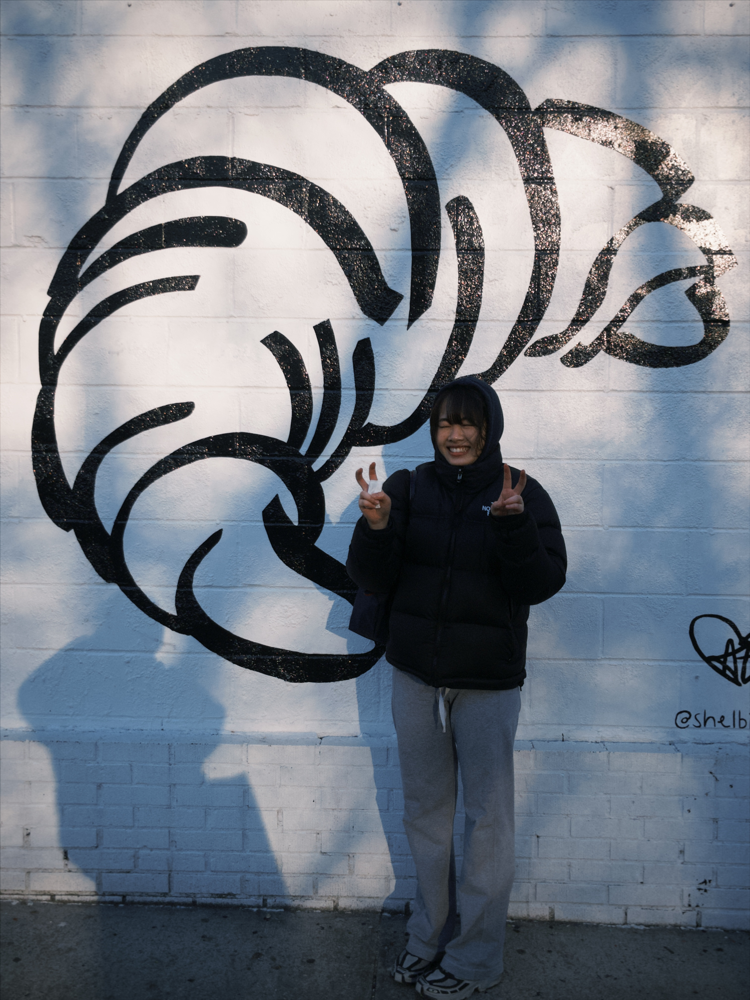

Based in NYC. Full-time student at @ParsonsDT.
My primary focus is in web development as well as UI/UX design. In every interface I create, I ensure that it is as functional as it is visually compelling. I'm passionate about building digital experiences that feel intuitive to the user and a clean foundation for future development.
Recently, I've expanded into using 3D software such as Unity and Blender to further my project experience.
